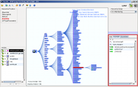

MostVis: An Interactive Visualization Supporting Automotive Engineers in MOST Catalog Exploration

Venue. IV (2009)
Authors. Michael Sedlmair, Christian Berhold, Daniel Herrscher, Sebastian Boring, Andreas But
Abstract. The MOST bus is a current bus technology for connecting multimedia components in cars, such as radios, navigation systems, or media players. The bus functionality is described in a large hierarchically structured catalog of some 4psila000 entries. Browsing this catalog has become infeasible on paper as well as with currently used textual database interfaces. An observation of current work practices has revealed many problems and inefficiencies. We describe the (iteratively developed) design of MostVis, a visual tool for exploring MOST function catalogs, as well as an evaluation of our implemented prototype. Our design carefully adapts existing visualization techniques and combines them in a multiple coordinated view (MCV) approach to satisfy the specific needs of our target group. With this paper, we hope to provide a living example of how existing general-purpose techniques can be successfully trimmed and tailored for a very specific audience.